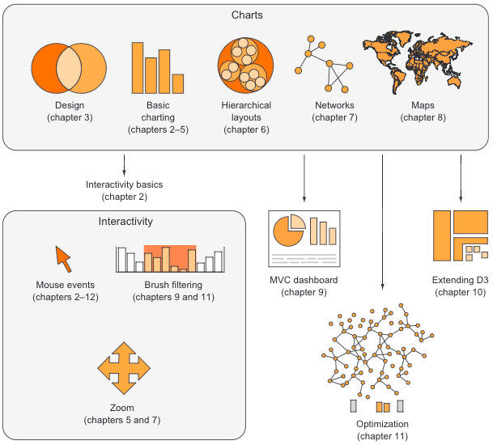
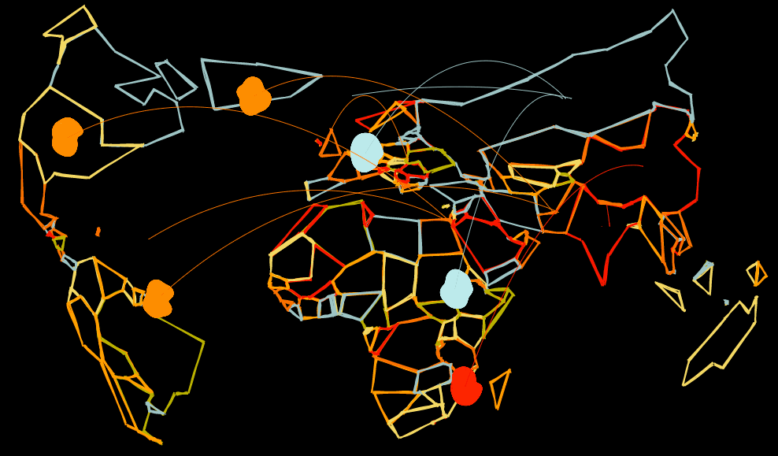

A Technical Guide for Professional Data Visualization
The 2nd edition of D3.js in Action was officially published today. It’s eleven chapters of full-color, in-depth exploration of the most popular data visualization library in JavaScript and one of the most popular JavaScript projects more generally. The publication of the second edition brings to an end a distinct stage in my career. No, this isn’t where I announce my retirement to a goat farm — not yet. But from the time I started writing the first edition in 2013 to the conclusion of the second edition today, I went from someone making bespoke data visualization as a growing part of my technical duties to someone who builds data visualization-based analytical applications and the libraries to support them for a major tech company.

Why a Second Edition?
Technically, (and D3.js in Action is a technical book) the second edition was prompted by a change in D3 from v3 to v4, which represented a host of major changes to D3 in its capabilities and API surface. I agreed to write D3.js in Action originally as a chance to really learn the library and describe it to readers in a way that expressed its power and elegance. My emphasis with the second edition was more on explaining how to use D3 in the context of industry practice, something very different from the bespoke data visualization that I had originally done. At the same time, D3 also changed its publication mode, embracing the modern practice of using ES2015 modules and exposing the parts of D3 in small pieces, so if you’re only using the shape rendering and scales, you only have to import d3-scale and d3-shape. Much of the syntax also changed, making a 2nd edition a practical necessity for people wanting to learn the library. There are more changes, such as convenient canvas rendering for shapes and a much more exciting, constraint-based force directed layout, that makes D3v4 worth the investment.
An Evolving Field
But those changes pale in comparison to the changes to data visualization as a field over the last five years. The field has transformed from a small group of esoteric practitioners creating bespoke works to a massive community of practice wrestling with how to address professional issues. Unfortunately, those professional issues haven’t been worked out, and people like me still don’t have good answers when junior developers ask them how to get and succeed at jobs involving data visualization. That’s mainly because those original freelancers have spent more time handing out awards to each other than defining professional standards. The result is a bimodal distribution of material for data visualization practitioners: libraries of books and websites for basic dashboard and BI tool use and libraries of books and websites showing off bespoke data visualization, but not much in the middle. One of my goals with D3.js in Action was to fill that gap a little bit, though not at the cost of accurately describing the library.
When I started writing the first edition, D3 was not quite the unquestioned champion of low-level data visualization libraries, but it was already a dominant force. Like now, back then there was a small but vocal group of supporters of Processing, with P5.js about to drop in late 2013, and there was Raphael.js, which is apparently still around, and that’s about all anyone seems to say about it. Nothing stuck like Mike Bostock’s exhaustive treatise on the functional display of graphics with JavaScript. That’s not to say other libraries didn’t then or don’t now deal with graphics or SVG. One weakness I see with data visualization practice is the lack of familiarity with other libraries and techniques that deal with graphics and data visualization using approaches that are different from D3.
That’s because this domination by D3 is a very real phenomenon in data visualization, and is reflected even in the way data visualization creators typically share their work and build their portfolios. When the first edition of D3.js in Action was published, I released the figures in the way that folks back then released their work: using fixed examples uploaded to gist.github.com and exposed interactively using bl.ocks.org, a tool also created by Mike Bostock. I used to use blocks to prototype and show off my data visualization work all the time.

D3 Developers Shouldn’t Be Siloed Away from the JS Community
Now, I feel like the whole blocks ecosystem cuts data visualization developers off from other js developers. It creates this unnecessary layer of separation from the larger community and implies in its practical effects that there’s something different between coding data visualization and coding other JavaScript applications. In the last year I’ve only created 10 blocks and every time I did it felt like a hassle. It’s little more than a convenience layer with no interface and no affordances to manage and publish your examples. That’s why I’ve started to publish small examples for Semiotic on CodePen, which includes not only support for ES2015 but also JSX and more importantly, ways for me to see the popularity of my pens and other mechanisms to support how an audience might use them.
That wasn’t so important way back in 2013, when the way to prove you were good at data visualization was to produce complex graphical shapes and make them interactive, regardless of whether they were used or even usable. My book embraced that view, showing you not only how to make a bar chart (boring!) but also how to make an arc diagram (cool!). But even more than that, proving you were good at data visualization meant proving you really understood D3’s internals and its awesome power, and so I wrote a chapter showing readers how to use D3 as a replacement for JQuery to create HTML elements like a simple image gallery. I also had a chapter on how to work with d3.touches, a very low-level way to work with touch interaction ambitiously titled Mobile Data Visualization. The first edition of D3.js in Action was focused on making you an in-depth expert with D3, which was the way to become a data visualization professional.
Things have changed since then. Tableau has grown from a plucky startup just going through its IPO in 2013 to a dominant BI tool in 2017. Full-time data visualization instructors like Stephen Few & Stephanie Evergreen, as well as freelancers who moonlight with data visualization courses like Andy Kirk, have established a set of best practices focused on precise, clear, sparse information visualization that has little in common with the complex functionality in D3. Gregor Aisch made us question whether anyone interacts with data visualization and Giorgia Lupi has blown the doors off the New Aesthetic with data visualization as art.
Does that mean I’m telling you that you no longer need to learn D3 to do great data visualization? That would be pretty foolish, right? But that’s exactly what I’m telling you. In fact, I don’t think you ever had to learn D3 to do great data visualization, which is another massive change in the way I saw the world, and how I think others saw the world. If you’re not careful, learning D3 and investing all that time and energy into low-level graphical manipulation can make you worse at data visualization, because the entire library is framed as an engineering solution to an engineering problem, and data visualization is not an engineering problem. Data visualization is a communication problem. Good data visualization is achieved through good design, regardless and often in spite of the choice of tool.
Then why has D3 so dominated data visualization? Why do Tableau users consistently apologize to me as they’re showing me Tableau dashboards? Because the world of data visualization isn’t concerned with producing good communication, it’s mostly about showing off. As Patroclus said, “Achilles, I fear your strength is weakness.” D3’s very domination of the field made people think it was the only thing you needed to know, and now the data visualization landscape is riddled with graphically complex, smoothly animated yet incomprehensible graphics in that oh-too-common 20 color scheme. D3 practitioners run the risk of obsolescence when they focus solely on the technical challenges instead of framing data visualization in a user-centered design context.
D3 is unchallenged as a low-level library, and I use it extensively in Semiotic and the novel graphical components of Beyond the Tip. That obscures the other non-technical methods required to make great data visualization. It’s doubly hard for me because showing off the technical talent that you discover in a technical book like D3.js in Action does a great job of driving sales of the book, despite it being poor preparation for professional practice. It’s too easy to show off with data visualization.
D3’s Place in a Growing Profession
That’s why when I wrote the second edition I included eight examples from people across the field whose work I respected, and my own. I wanted readers to see the products made with data visualization and to see the deep and sometimes superficial ways that real practitioners integrate D3 with their practice.
- Jeff Heer answers why should you still learn D3
- Bocoup describes their design process with the Measurement Lab
- Adam Pearce talks about using streamgraphs in the New York Times
- Nadieh Bremer walks you through her design of hierarchical diagrams
- Shirley Wu explains how animation and particles help draw readers in
- Philippe Rivière shows off his creative map-making process
- I look at dashboard design at Netflix
- Susie Lu explores API design with her d3-legend component
- Christophe Viau dives deep into optimized rendering for massive datasets
With these varied examples, readers can draw their own conclusions about how these technical details developed into analytical applications. That’s also why D3.js in Action is a much more beautiful book — -full-color printed on high-quality paper. I cared about color in a technical sense in the first edition, and it shows. That book adequately explained the color functionality that D3 provides but didn’t really demonstrate it in the black-and-white printing that it arrived in.
But design isn’t color, design is an approach. I designed the 2nd edition of D3.js in Action and I did not do so in the first edition. When I wrote the first, I thought of my audience as a technical concern, a minimally qualified reader who would know enough technically to understand and learn the technical points of D3. In my second edition, I designed the book to address a reader who was a data visualization professional, a thing that not everyone even agrees exists. I hoped to impart on that reader an understanding of D3 in the perspective of successful professional practice. I still needed to teach them the code, and the book is not radically changed from the original because of it, but it is a significant shift in my own perspective and one which is sorely lacking when we approach data visualization as an engineering problem.
D3 isn’t going anywhere, but when you learn it, you should no longer learn D3 as if it was data visualization in toto, and that’s how the 2nd edition of D3.js in Action was written, as a guide for serious practitioners who expect to make data visualization that is both complex and effective. To that end, it drops the chapter on JQuery-like document composition in favor of a chapter showing how to integrate parts of D3 within another library (in this case, React). You can see a sample from that chapter here. It also drops the chapter on mobile, which treated mobile data visualization more like an engineering problem with a fun new interface (touch) rather than the seriously complicated and little explored design problem it really is.
You should still learn D3. The structured approach to creating and manipulating graphical elements tied to data is still the cleanest, most sophisticated example available. And when you learn to tie data to graphics like that, it helps you to better understand the scope and depth of data visualization problems no matter what the tool you use or the final product eventually looks like. But I now consider that only a technical expression of data visualization, for which I’ve written a comprehensive technical book. And so to make sure you don’t end up unprepared for real professional data visualization, I tried to place D3 within the context of real-world practical data visualization application. This meant real coding practices but also, more importantly, real context.
I hope, in that way, I produced not only a better book that adequately teaches you how to use D3, but also how not to use it, and how to better create data visualization that communicates and enlightens.